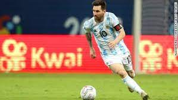

El futbolín es un juego de mesa basado en el fútbol. Se juega sobre una mesa especial sobre la cual ejes transversales con palancas con forma de jugador son girados por los jugadores para golpear una pelota. En España existen dos tipos diferentes de juego, habiéndose creado paralelamente un tipo de fútbol de mesa diferente al inglés, con diferentes medidas. Mientras que en el fútbol de mesa internacional los jugadores tienen las piernas juntas, en España la mayoría son con las piernas separadas.

Orígenes La primera patente1 del futbolín fecha de 1880-1890 en España, donde se creó un modelo de pequeñas dimensiones con los jugadores con sus piernas unidas. Posteriormente en España se inventaba otro tipo de futbolín cuyos muñecos tenían las piernas separadas. La idea fue del gallego Alejandro Finisterre, seudónimo de Alejandro Campos Ramírez, conocida gracias al relato difundido por él mismo, según el cual recordaba que, tras resultar herido durante uno de los bombardeos de Madrid durante la Guerra Civil Española, vio en el hospital que muchos niños heridos como él no podían, por ejemplo, jugar al fútbol. Entonces se le ocurrió la idea del futbolín, basándose en otros juegos de mesa. Alejandro confió a su amigo Francisco Javier Altuna, de oficio carpintero, la realización del primer futbolín siguiendo sus instrucciones.23 Aunque la invención se patentó en 1937,234 Finisterre tuvo que exiliarse a Francia a causa del triunfo franquista en la guerra, perdiendo los papeles de la patente en una tormenta,234 por lo que no hay forma de saber cómo era este diseño original ni su forma o medidas. Después de exiliarse en América del Sur, introdujo algunos cambios (como las barras de acero),[cita requerida] y divulgó el juego por el continente.4 El juego se expandió rápidamente por la península ibérica. Tanto es así, que en la década de los 60, cuando Alejandro Finisterre volvió a España, el juego se había extendido ampliamente, a pesar de que gran parte de esta divulgación se debiera al hecho de que los fabricantes valencianos asumieran el juego como nacional (de España). El juego Los jugadores tratan de utilizar los muñecos montados en barras rotantes para golpear la bola hacia la meta del contrincante. La bola del fútbol de mesa puede alcanzar velocidades de hasta 120 km/h en competición. La mayoría del tiempo se hace difícil incluso ver la bola, puesto que no parece más que una imagen borrosa. El deporte requiere reflejos rápidos, un tacto delicado, una gran habilidad, y el control y el conocimiento finos de las técnicas del juego. En el futbolín es fundamental saber 'lanzar' la bola, y no perder el control de la misma cuando ésta se está moviendo. Cuando el jugador, atravesado con una barra, tiene posesión de la misma, la tiene que pasar al resto de compañeros hasta conseguir poder 'tirar a puerta'. El campeón en el futbolín se determina cuando un equipo anota un número predeterminado de goles, por ejemplo 7 o 9. En la competición, se cuenta cada bola que entra en la portería, siempre y cuando los jugadores del equipo que anota no rompan alguna regla del juego para conseguir el tanto. En los grandes acontecimientos hay árbitros que determinan las infracciones y penaltis.
Tipos de futbolín En España coexisten dos tipos de futbolines: El modelo español, con el campo curvado descendente hacia el centro y los muñecos metálicos con las piernas abiertas. El modelo internacional, con los muñecos de plástico o madera y con las piernas juntas (fútbol de mesa). Cada uno tiene su propia competición y sus propias reglas. Todo ello está recogido en la página de la Federación Española de Futbolín. El futbolín de dos piernas no se utiliza en competencias internacionales. Jóvenes jugando al fútbol de mesa (taca taca) en una mesa pública en Chile. Internacionalmente, existe un gran número de mesas diferentes. Los usados en las giras mundiales y torneos oficiales de la Federación Internacional (ITSF) son Bonzini de Francia, Fireball de China, Roberto-Sport de Italia, Leonhart de Alemania y Garlando de Italia. Se ha creado un futbolín español llamado "Supra" de la marca Sam, reconocido por la Federación Española, y que próximamente se presentará como modelo oficial de la Federación Internacional. Existen otras marcas importantes, entre las que se incluyen, Kicker, Garlando, Löwen-Soccer, Warrior, Lehmacher y muchas más. También existe un fútbol de mesa de 7 metros de largo creado por el artista Maurizio Cattelan para una obra llamada Stadium. Se necesitan 11 jugadores por cada lado. Las diferencias en los tipos de mesas tienen una gran influencia en los estilos que se juegan. La mayoría de las mesas tienen un portero cuyos movimientos están restringidos al área de la portería. En esas mesas el portero no es capaz de coger la bola una vez que se sale fuera del área. Otra diferencia importante se encuentra en las bolas, que se pueden hacer de corcho, plástico o incluso mármol y metal, variando mucho la velocidad de los disparos, así como la interacción entre el jugador y la bola.Todas las mesas o campos de juego poseen un desnivel de 1 grado en la zona de portería y medio campo para facilitar el movimiento de la pelota. En los torneos se suele regular esta disposición según la modalidad de juego (véanse modalidades de juego). La estrategia en el futbolín varía enormemente. Con equipos de un jugador cada uno, es imposible que cada persona controle las cuatro filas de futbolistas simultáneamente. Algunos jugadores ponen la mano izquierda siempre en la empuñadura de la barra del portero o en la defensa y mueven la mano derecha entre las otras tres filas. Los jugadores más agresivos pueden realizar un ataque con las manos en el centro del campo y en los delanteros, dejando el portero sin tocar...